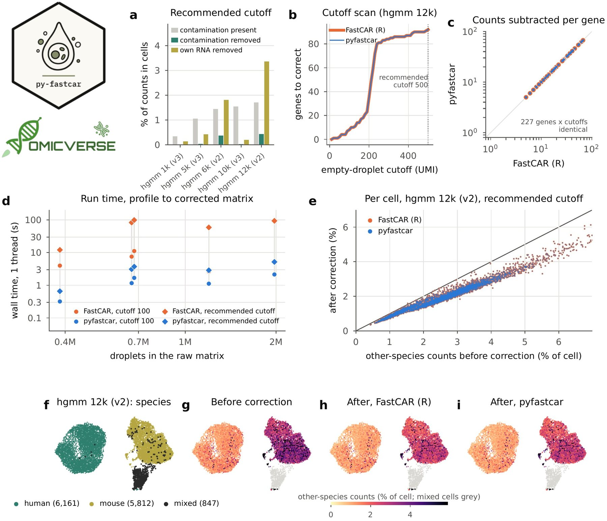

pyfastcar: a Python implementation of FastCAR for ambient RNA correction in single-cell RNA-seq data
Affiliations
- 1 Department of Genetics, Stanford University, Stanford, CA 94305, USA
- 2 OmicVerse, Inc., San Francisco, CA 94114, USA
- 3 Hubei Key Laboratory of Agricultural Bioinformatics, College of Informatics, Huazhong Agricultural University, Wuhan 430070, China
OmicVerse Technical Reports (2026)Cite this article
Download PDFAbstract
We present pyfastcar, a Python implementation of FastCAR, which corrects droplet-based single-cell RNA-seq data for ambient RNA by subtracting, for each gene that is frequent in empty droplets, its highest count in an empty droplet from every cell. pyfastcar implements FastCAR's profile, correction and empty-droplet cutoff scan, and computes the scan for all cutoffs in one pass over the raw matrix. On five human–mouse mixtures from 10x Genomics (37,494 cells; 0.38 to 1.98 million droplets), pyfastcar returned the same cutoff tables, recommended cutoffs, per-gene profiles and corrected counts as FastCAR 0.1.0, with no difference in any entry. It ran 2.3 to 12.5 times faster than FastCAR at a fixed cutoff and 18 to 27 times faster when it also chose the cutoff. pyfastcar is used by OmicVerse for ambient RNA correction and is released at https://github.com/omicverse/py-fastcar and on PyPI.
- FastCAR
- ambient RNA
- contamination
- empty droplets
- single-cell RNA-seq
- Python
- reproducibility
Introduction
Droplet-based single-cell RNA sequencing captures, together with each cell, cell-free RNA from the suspension. These ambient transcripts add counts of genes a cell does not express, blur cell-type markers and can mislead clustering and differential expression, so the correction of ambient RNA is a routine quality-control step1,2. Methods differ in what they model. SoupX3 estimates one contamination fraction per channel from the RNA of empty droplets, decontX4 models each cell as a mixture of its population's expression and contamination, and CellBender5 fits a generative model to all droplets. FastCAR6 is a gene-level method designed for differential expression between conditions: it finds the genes that are present in many empty droplets and subtracts from every cell, for each of them, the highest count seen in an empty droplet.
Single-cell analysis is increasingly done in Python. Workflows are built on scanpy and the scverse ecosystem7,8, and OmicVerse9 brings bulk, single-cell and spatial analyses together in one Python framework. FastCAR, however, is available only in R, as a package on GitHub.
Python users currently reach FastCAR through rpy210. This requires a parallel R installation, converts the raw matrix of all droplets, often more than a million columns, between the two languages and exposes FastCAR's functions only through the binding layer. A native implementation removes all three costs, as PyDESeq211 has shown for DESeq212 and pyedger13 for edgeR14. We set the same target for pyfastcar: a correction in Python should return the same counts as the same correction in R.
Here we present pyfastcar, a Python implementation of FastCAR that is versioned against a specific FastCAR release. We describe its implementation and compare it with FastCAR 0.1.0 on five human–mouse mixtures from 10x Genomics, in which the ambient RNA of every cell can be measured directly.
Implementation
Method
FastCAR takes the raw matrix of all droplets and the matrix of the cells6. Droplets with fewer counts than an empty-droplet cutoff, 100 by default in its documentation, are taken as empty. For each gene, FastCAR records the highest count in any empty droplet and the fraction of empty droplets that contain the gene. Genes found in more empty droplets than a contamination-chance cutoff are corrected: their highest empty-droplet count is subtracted from the gene's count in every cell, and negative results are set to zero. All other genes are left unchanged. To choose the empty-droplet cutoff, FastCAR scans a range of cutoffs, counting at each the empty droplets, the genes seen in them and the genes that would be corrected, and recommends the first cutoff at which the number of corrected genes is largest.
Features and code structure
pyfastcar 0.1.1 implements the functions of FastCAR 0.1.0 (Table 1): the ambient profile, the correction, the cutoff scan with its recommendation, and readers for Cell Ranger output. correct_anndata runs the profile and the correction on AnnData objects15 and stores the corrected counts in a layer. pyfastcar builds on NumPy16, SciPy17 and pandas18 and keeps the raw matrix sparse throughout.
| FastCAR 0.1.0 | pyfastcar | Agreement on the benchmark data |
|---|---|---|
| determine.background.to.remove | determine_background_to_remove | identical profiles |
| remove.background | remove_background | identical corrected counts |
| describe.ambient.RNA.sequence | describe_ambient_rna_sequence | identical tables |
| recommend.empty.cutoff | recommend_empty_cutoff | identical cutoffs |
| read.cell.matrix, read.full.matrix | read_cell_matrix, read_full_matrix | — |
Numerical parity with FastCAR
FastCAR has no random component, so the same input gives the same output, and pyfastcar computes each quantity as FastCAR does: maxima and counts of non-zero entries over the empty droplets, a strict comparison with the contamination-chance cutoff, and subtraction with a floor at zero. pyfastcar works on the stored entries of the sparse raw matrix instead of extracting the empty droplets. For the cutoff scan, each non-zero entry is assigned to the smallest cutoff above its droplet's total. One count table of genes by cutoffs, summed over the cutoffs in order, then gives the number of empty droplets containing each gene at every cutoff, in one pass over the matrix. The functions are tested against FastCAR 0.1.0 (14 tests, of which 5 run R). pyfastcar versions follow FastCAR releases (0.1.x tracks FastCAR 0.1.0).
Use in OmicVerse
pyfastcar is the FastCAR backend of OmicVerse9 ambient-RNA correction: ov.pp.ambient.remove_ambient(adata, method='fastcar', raw=...) takes the filtered AnnData and the raw matrix of all droplets and stores the corrected counts.
Comparison with FastCAR on human–mouse mixtures
Data and design
We used the five mixtures of human and mouse cells from 10x Genomics19 of the pysoupx report3: hgmm 1k, 5k and 10k with v3 chemistry, and 6k and 12k with v2. Each comes with the raw matrix of all droplets (0.38 to 1.98 million) and Cell Ranger's cells (1,046 to 12,820 per mixture, 37,494 in total). In a human cell, counts of mouse genes can only come from ambient RNA, and the reverse holds for mouse cells (Supplementary methods). Both packages ran two configurations: the empty-droplet cutoff of 100 and the cutoff recommended by a scan from 10 to 500 in steps of 10, both with the contamination-chance cutoff of 0.05 used in FastCAR's documentation. We compared the cutoff tables, the recommended cutoffs, the per-gene profiles and the corrected counts, how much ambient RNA the correction removed, and run time.
Profiles and corrected counts
pyfastcar returned the same cutoff table as FastCAR in all five mixtures, and therefore the same recommended cutoff: 110 in hgmm 1k, 330 in hgmm 5k, 460 in hgmm 6k and 10k, and 500 in hgmm 12k (Fig. 1b). The profiles agreed for all 227 corrected genes of the two configurations (Fig. 1c), and the corrected count matrices were identical in every entry, with a largest absolute difference of 0. In the embedding of hgmm 12k, the share of other-species counts after correction was the same in every cell (Fig. 1e–i).
Both packages therefore correct the mixtures in the same way. At the cutoff of 100, FastCAR corrected 0 to 8 genes and removed at most 3.6% of the cross-species counts. At the recommended cutoff it corrected 3 to 100 genes and removed 1.6 to 25.6% of the cross-species counts, which made up 0.3 to 1.7% of the counts of the cells. Because the same amount is subtracted from every cell, cells that express a corrected gene lose counts as well: in hgmm 12k, the correction removed 0.44% of the cells' counts as cross-species RNA and 3.4% as RNA of the cell's own species (Fig. 1a).

Speed
At the cutoff of 100, pyfastcar ran 2.3 to 12.5 times faster than FastCAR, and with the cutoff scan 18 to 27 times faster (Fig. 1d). For hgmm 10k, the largest raw matrix (1.98 million droplets), the correction with the scan took 94 s with FastCAR and 5.2 s with pyfastcar.
Conclusion and future perspectives
pyfastcar brings FastCAR to Python with the same results as R. On five human–mouse mixtures it returns the same cutoff tables, recommended cutoffs, profiles and corrected counts as FastCAR 0.1.0, and runs an order of magnitude faster when it chooses the cutoff. Because pyfastcar works with AnnData objects and is part of OmicVerse, ambient RNA can be corrected in the same Python session as the rest of a single-cell workflow. FastCAR's gene-level correction can also be compared directly with the cell-level corrections of pysoupx and pydecontx on the same data.
Future work includes FastCAR's plots of the cutoff scan and of the ambient profile. pyfastcar will continue to follow FastCAR releases, with each version pinned to the release it reproduces.
Data and code availability
pyfastcar is released under the Apache License 2.0 on PyPI (pip install pyfastcar) and at https://github.com/omicverse/py-fastcar; this report describes version 0.1.1. The benchmark (report/scripts in the repository) reproduces every number and figure in this report. The raw and filtered matrices of the 10x Genomics datasets hgmm_1k_v3, hgmm_5k_v3, hgmm_10k_v3, hgmm_6k and hgmm_12k were obtained from https://www.10xgenomics.com/datasets, accessed on 11 November 2026. Software: pyfastcar 0.1.1 (Python 3.10, NumPy 2.2.6, SciPy 1.15.2, pandas 2.3.3; scanpy 1.11.5 for Fig. 1f–i); FastCAR 0.1.0 with qlcMatrix on R 4.5.3. Hardware: one node of the Stanford Sherlock cluster (AMD EPYC 9754).
Declaration of generative AI and AI-assisted technologies
The authors used Claude Opus 5.5, GPT-6 Astra, and OmicOS to proofread grammar and syntax, improve readability. Any AI-assisted edits were reviewed by the authors, who take full responsibility for the content of this publication.
Conflicts of interest
Contributors Zehua Zeng and Xu Meng are affiliated with OmicVerse, Inc.
References
- 1.Heumos L, Schaar AC, Lance C, et al. (2023). Best practices for single-cell analysis across modalities. Nature Reviews Genetics 24, 550-572. 10.1038/s41576-023-00586-w
- 2.Janssen P, Kliesmete Z, Vieth B, et al. (2023). The effect of background noise and its removal on the analysis of single-cell expression data. Genome Biology 24, 140. 10.1186/s13059-023-02978-x
- 3.OmicVerse Team (2026). pysoupx: a Python implementation of SoupX for ambient RNA removal in single-cell RNA-seq data. OmicVerse Technical Reports. https://omicverse.org/articles/pysoupx.html
- 4.Yang S, Corbett SE, Koga Y, et al. (2020). Decontamination of ambient RNA in single-cell RNA-seq with DecontX. Genome Biology 21, 57. 10.1186/s13059-020-1950-6
- 5.Fleming SJ, Chaffin MD, Arduini A, et al. (2023). Unsupervised removal of systematic background noise from droplet-based single-cell experiments using CellBender. Nature Methods 20, 1323-1335. 10.1038/s41592-023-01943-7
- 6.Berg M, Petoukhov I, van den Ende I, et al. (2023). FastCAR: fast correction for ambient RNA to facilitate differential gene expression analysis in single-cell RNA-sequencing datasets. BMC Genomics 24, 722. 10.1186/s12864-023-09822-3
- 7.Wolf FA, Angerer P, Theis FJ (2018). SCANPY: large-scale single-cell gene expression data analysis. Genome Biology 19, 15. 10.1186/s13059-017-1382-0
- 8.Virshup I, Bredikhin D, Heumos L, et al. (2023). The scverse project provides a computational ecosystem for single-cell omics data analysis. Nature Biotechnology 41, 604-606. 10.1038/s41587-023-01733-8
- 9.Zeng Z, Ma Y, Hu L, et al. (2024). OmicVerse: a framework for bridging and deepening insights across bulk and single-cell sequencing. Nature Communications 15, 5983. 10.1038/s41467-024-50194-3
- 10.Gautier L. rpy2: Python interface to the R language. https://rpy2.github.io
- 11.Muzellec B, Teleńczuk M, Cabeli V, Andreux M (2023). PyDESeq2: a python package for bulk RNA-seq differential expression analysis. Bioinformatics 39, btad547. 10.1093/bioinformatics/btad547
- 12.Love MI, Huber W, Anders S (2014). Moderated estimation of fold change and dispersion for RNA-seq data with DESeq2. Genome Biology 15, 550. 10.1186/s13059-014-0550-8
- 13.Zeng Z, Meng X (2026). pyedger: a Python implementation of edgeR for differential expression analysis. Preprints.org. 10.20944/preprints202611.1133.v1
- 14.Robinson MD, McCarthy DJ, Smyth GK (2010). edgeR: a Bioconductor package for differential expression analysis of digital gene expression data. Bioinformatics 26, 139-140. 10.1093/bioinformatics/btp616
- 15.Virshup I, Rybakov S, Theis FJ, Angerer P, Wolf FA (2024). anndata: access and store annotated data matrices. Journal of Open Source Software 9, 4371. 10.21105/joss.04371
- 16.Harris CR, Millman KJ, van der Walt SJ, et al. (2020). Array programming with NumPy. Nature 585, 357-362. 10.1038/s41586-020-2649-2
- 17.Virtanen P, Gommers R, Oliphant TE, et al. (2020). SciPy 1.0: fundamental algorithms for scientific computing in Python. Nature Methods 17, 261-272. 10.1038/s41592-019-0686-2
- 18.McKinney W (2010). Data structures for statistical computing in Python. Proceedings of the 9th Python in Science Conference, 56-61. 10.25080/Majora-92bf1922-00a
- 19.Zheng GXY, Terry JM, Belgrader P, et al. (2017). Massively parallel digital transcriptional profiling of single cells. Nature Communications 8, 14049. 10.1038/ncomms14049
- 20.Becht E, McInnes L, Healy J, et al. (2019). Dimensionality reduction for visualizing single-cell data using UMAP. Nature Biotechnology 37, 38-44. 10.1038/nbt.4314
Supplementary information
Supplementary methods
Data. The tasks are those of the pysoupx benchmark3: for each mixture, the raw matrix of all droplets, Cell Ranger's cells (for the v2 datasets, the union of the cells called with the human and the mouse reference) and species labels (human with at least 90% of counts from human genes, mouse with at most 10%, the rest mixed).
Runs. In R: determine.background.to.remove(raw, cells, 100, 0.05) and remove.background(cells, profile) for the fixed cutoff; describe.ambient.RNA.sequence(raw, 10, 500, 10, 0.05), recommend.empty.cutoff, then the same two calls with the recommended cutoff. In Python, the corresponding pyfastcar functions with the same arguments.
Removal. For each single-species cell, the counts of the other species' genes before and after correction give the cross-species counts removed; the counts of its own species' genes give the own-species counts removed. Per mixture, both are summed over the human and mouse cells and given as percentages of all their counts (Fig. 1a) or of the cross-species counts before correction.
Embedding (Fig. 1f–i). The cells of hgmm 12k were embedded with scanpy (counts normalised to 10,000 per cell and log-transformed, 2,000 variable genes, 30 principal components, 15 nearest neighbours) and UMAP; the embedding is for display only.
Run time. Run times are wall-clock times from the raw and cell matrices in memory to the corrected matrix, without reading and writing files. Each run was pinned to its own idle processor core with BLAS and OpenMP limited to one thread, R and Python alternating over 10 cores of one node. Each configuration ran twice per mixture, and the faster run is reported.
Notes for users coming from R
- Versions. pyfastcar 0.1.x tracks FastCAR 0.1.0.
- Input. The functions take genes × droplets matrices, as FastCAR does;
correct_anndatatakes AnnData objects (cells × genes). - Contamination-chance cutoff. FastCAR's functions have no default; pyfastcar's default is 0.005, and FastCAR's documentation uses 0.05, as in this report.
- Choosing the cutoff.
describe_ambient_rna_sequenceandrecommend_empty_cutoffreturn the same table and cutoff as their R counterparts.
Author information
Affiliations
- 1 Department of Genetics, Stanford University, Stanford, CA 94305, USA
- 2 OmicVerse, Inc., San Francisco, CA 94114, USA
- 3 Hubei Key Laboratory of Agricultural Bioinformatics, College of Informatics, Huazhong Agricultural University, Wuhan 430070, China
Correspondence
Correspondence to OmicVerse Team (contact@omicos.cn).
Contributors
OmicVerse Team members who contributed to this report: Zehua Zeng1,2, Xu Meng2,3.
Cite this article
OmicVerse Team. pyfastcar: a Python implementation of FastCAR for ambient RNA correction in single-cell RNA-seq data. OmicVerse Technical Reports (2026). https://omicverse.org/articles/pyfastcar
@techreport{omicverseteam2026pyfastcar,
title = {pyfastcar: a Python implementation of FastCAR for ambient RNA correction in single-cell RNA-seq data},
author = {{OmicVerse Team}},
institution = {OmicVerse},
type = {Technical Report},
year = {2026},
url = {https://omicverse.org/articles/pyfastcar}
}